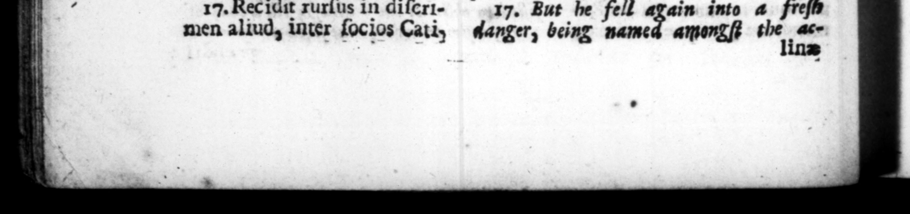

WM. % . . 4 8 C. li cauſſa circumſtaimmoderatius perſeveranti necem comminata eft : etiam ſtrictos glad ios uſque eo intentans, ut ſedentem und reximi deſeruerint, vix uct complexu oy 0 wh . Jefta protexerint, Tune plane deterritus non modo ceſſit, » Ted etiam in reliquum anni rempus Curia abſtinuit. 15. Primo Præturæ die Q. Catulum de re fect ione Capitolii ad difquifitionem populi vocav it, rogatione promulgata, qua curat ionem eam in ium transferebat. Verum impar optimatium conſpirationi, quos rel icto ſtatim novorum conſulum officio, fre · uentes, obſtinatoſque ad reendum concurriſſe cerneDat, hanc quidem actionem depoſuit. 2 16. Cæterum Czcilio Metello Tribun. plel. turbulentiflimas leges adverſus collegarum interceſſionem 1 auctorem opugnatoremque le pertina85 — : donec ambo adlminiſtratione reipub, decreto patrum ſummoverentur. Ac nihilo minus permanere in magiſtratu, & jus dicere auſus, ut comperit paratos, qui vi ac per arma prohiberent, dimiſſis lictoribus, abjectaque prætexta, domum clam refugit, pro conditione temporum quieturus, Multitudinem quoque biduo poſt ſponte & ultro confluentem, ramque ſibi in aſſerenda dignitate tumultuoſius pollicentem, compeſcuit. Quod cum præter opinionem eveniſſet, ſenatus ob eundem coœtum feſtinato coactus, grarias ei per primores viros egit: accitumque in Curiam, & ampliflimis verbis collaudatum, in integrum reſtituit inducto priore decieto. 17. Rec idit rurſus in dĩſcrimen aliud, inter ſocios Cathy moved much SE T. TARAAN O.. a5 4 Guard, his purſuing his paint with — - pri — ——— | holding up their drawn ſwords at him inſomuch that thoſe that ſat next him 5 — * ends with ed him etti him in —— and An — #ogas before him. At which being quite diſcourazed, he not only dropt the matter, but declined his attendance in the _ baſe for all the reſt of that year. 15. Upon the firſt day of his pretarſbip, he called Q. Catulus to an account the people about the repairs ore of the capitol, 8 ns at the ſame time a bill, for the grant of that commiſſion to another 3 but not being able to ſtand the ſtrong be made againſt him by the party of the quality, whom he perceived to quit their attendance' upon the new great numbers, and br con _ in r* re t m 1 o oppoſe » he drops very reſolute16. He likewiſe _ ly by Cecilins Metellus tribune of the commons, in bu . preferring ſome very ſeditious bills to the people, in ſhite of all oppoſition from his col guss, till 7 were both by a vote of the houſe diſplaced, He venJ ae 3 to 2 8 15 , of admimſtring juſtice; but finding ſome prepared — hinder him by force . of arms, he diſmiſſed his s gown, and ger officers, threw f privately home with a reſolution 10 | be quiet, ſince the times run fo frog againſt hum. He likewiſe pacißed the mob, that in two days after gathered about him, and in 4 rita manner hin their aſſiBance, for the vi ndication * „F of nour. Which happening contrary to ion, the ſenate, who had met in all | haſte 1h occa of this tumult, gave 2 their —— of . wy of the _— members t e ſent —— after they bad high commended his behaviour, cancelled their former vote, and reſtored him to bis — But he fell gain into 4 freſh anger, being named amongſt the ace linz
